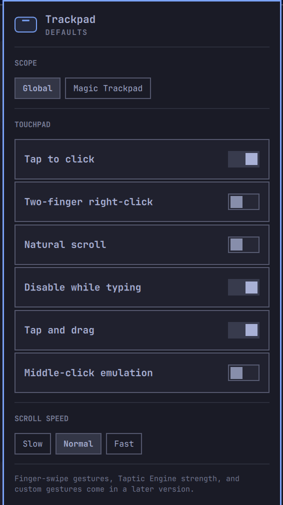

Omarchy · bar plugin
Magic Trackpad
Your trackpad, tuned from the bar. The libinput touchpad knobs Hyprland already has — one click away, applied live, fully reversible.
$omarchy plugin add https://github.com/andrewmp1/omarchy-magic-trackpad.git --enable --yes

Why
The trackpad pane Omarchy doesn't ship
Tap-to-click, two-finger right-click, natural scroll, scroll speed, disable-while-typing — the settings everyone changes, in a panel instead of a text file.
Instant
Flip a switch and libinput reacts now — the panel talks to
the running Hyprland with hl.config, not a config reload.
Persistent and reversible
Choices go to one JSON file and a managed ~/.config/hypr/*.lua
that Hyprland sources on every load. Remove the plugin, delete two files —
your config is byte-for-byte back.
Reads your real state
Options you've never touched show Hyprland's current value; the plugin only writes the ones you actually change.
Native to the bar
Themed by your Omarchy theme, keyboard-navigable
(j/k, Enter, Esc), and
it does not spawn a second Quickshell.
What it controls
| Tap to click | tap the pad instead of pressing down |
| Two-finger right-click | 2 fingers → right, 3 → middle clickfinger_behavior |
| Natural scroll | content follows the fingers |
| Disable while typing | ignore the pad briefly after a keypress |
| Tap and drag | tap-tap-hold to start a drag |
| Middle-click emulation | left + right together → middle |
| Scroll speed | Slow · Normal · Fast scroll_factor 0.2 / 0.4 / 0.8 |
| Scope | Global, or a per-touchpad override hl.device — natural scroll on the laptop pad but off on an external Magic Trackpad, say. A device scope inherits every option it hasn't overridden; Reset to Global clears it. |
How it works
~/.config/omarchy/magic-trackpad.json — plain JSON you can read, diff, and keep in your dotfiles.hyprctl eval "hl.config({ input = { touchpad = { … } } })"; a per-device change with hl.device({ name = "<slug>", … }). Omarchy runs Hyprland's Lua parser, which rejects hyprctl keyword.~/.config/hypr/omarchy-magic-trackpad.lua, loaded by one guarded dofile line the plugin appends to hyprland.lua — so it survives a restart.Tested
Six layers, run by bash scripts/check.sh. Layers 1–3 run in
CI on every push; 4–6 need a live Omarchy desktop.
1 · unit
config normalization + v1→v2 config-document migration, touchpad detection, the scope cascade, the exact hl.config / hl.device strings, the apply plan
2 · manifest
schema + Panel.qml stays in step with the plugin id
3 · lua syntax
the generated .lua is parsed with luac
4 · hyprland contract
each setting, applied with the plugin's own command, actually moves hyprctl getoption
5 · shell smoke
the plugin loads into a running omarchy-shell with no QML error
6 · panel e2e
synthetic keystrokes drive the rendered panel; the real option, the document, and persistence are all checked
# the full menu + a manual release checklist
docs/TESTING.md
Contribute
Issues and PRs welcome — the bar is low.
- Bug? Open an issue with the template —
omarchy version,hyprctl version, andscripts/check.shoutput. - Feature? If it's a touchpad option Hyprland already exposes, it's usually a few lines in
Model.js. - PR? Read CONTRIBUTING.md and AGENTS.md, run
bash scripts/check.sh, keepModel.jspure.